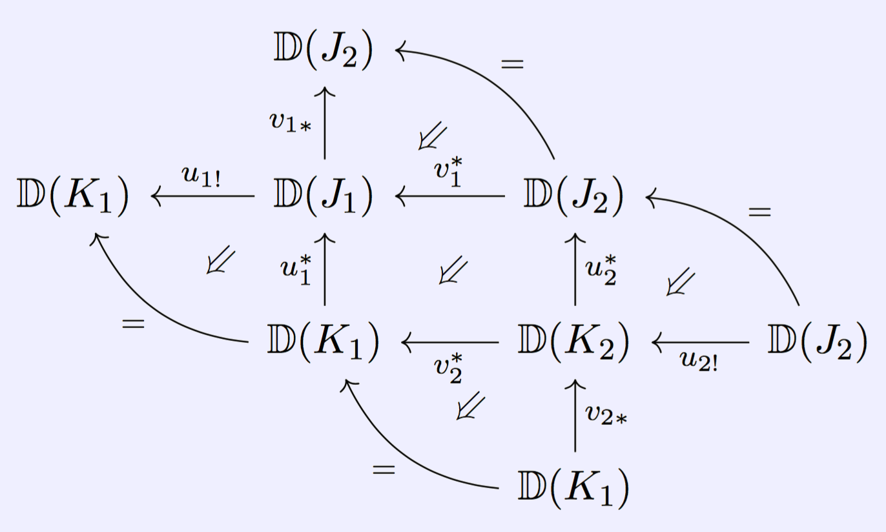

The website formerly known as the UCLA Derivators Seminar
UCLA
Mathematics Department
Los Angeles, CA, USA 90095-1555
Past Participants
Paul Balmer
James Cameron
Kevin Carlson
Ian Coley
Martin Gallauer
Ioannis Lagkas-Nikolos
John Zhang
Papers read by this seminar
Denis-Charles Cisinski,
Catégories Dérivables
Jens Franke,
Uniqueness theorems for certain triangulated categories possessing an Adams spectral sequence
Denis-Charles Cisinski,
Propriétés universelles et extensions de Kan dérivées
Richard Garner,
Understanding the small object argument
Moritz Groth,
Derivators, pointed derivators, and stable derivators
Moritz Groth,
Revisiting the canonicity of canonical triangulations
Moritz Groth,
Abstract tilting theory for quivers and related categories
Moritz Groth, Kate Ponto, and Michael Shulman,
The additivity of traces in monoidal derivators
Moritz Groth,
Characterizations of abstract stable homotopy theories
Fritz Hörmann,
Enlargement of (fibered) derivators
Fritz Hörmann,
Fibred multiderivators and (co)homological descent
Bernhard Keller,
Le dérivateur triangulé associé à une catégorie exacte
Jacob Lurie,
Higher Topos Theory
Fernando Muro and George Raptis,
K-theory of derivators revisited
Amnon Neeman,
Metrics on triangulated categories
Marco Porta,
Universal Property of Triangulated Derivators via Keller's Towers
Olivier Renaudin,
Plongement de certaines théories homotopiques de Quillen dans les dérivateurs
Gonçalo Tabuada,
Higher K-theory via universal invariants
Conferences attended
Dérivateurs à Barcelone
, University of Barcelona (IMUB), 1 - 4 September, 2015
Triangulated Categories and Applications
, Banff International Research Station (BIRS), 19 - 24 June, 2016
Workshop on Derivators
, Rezidence Dlouhá 17, 12 - 16 December, 2016
Triangulated Categories and Geometry - a conference in honour of Amnon Neeman
, Bielefeld University, 15 - 19 May, 2017
Homotopy Type Theory
(AMS Mathematics Research Community), Snowbird, UT, 4 - 10 June, 2017
K-theory and related fields
, Hausdorff Research Institute for Mathematics (HIM), 19 - 30 June, 2017
Recent developments in noncommutative algebra and related areas
, University of Washington, 17 - 19 March, 2018
Homotopy Theory Summer
, Freie Universität Berlin, 18 - 29 June, 2018
ICM 2018 K-theory satellite
, Universidad de Buenos Aires, 23 - 27 July, 2018
Workshop on Derivators
, Universität Regensburg, 9 - 12 April, 2019
Results
Paul Balmer and John Zhang,
Affine space over triangulated categories: a further invitation to Grothendieck derivators
Kevin Carlson,
On Whitehead's theorem beyond pointed connected spaces
Kevin Carlson,
On the ∞-categorical Whitehead theorem and the embedding of quasicategories in prederivators
Ian Coley,
Stabilization of derivators revisited
Ioannis Lagkas-Nikolos,
Levelwise modules over separable monads on stable derivators
John Zhang,
Affine lines over derivators: properties
Other Resources
Georges Maltsiniotis' exhaustive bibliography of derivators
A short document on the typesetting of diagrams in derivators
by Ian Coley
A header file that seems to be quite popular
by Mike Shulman
A Slack channel dedicated to the discussion of derivators